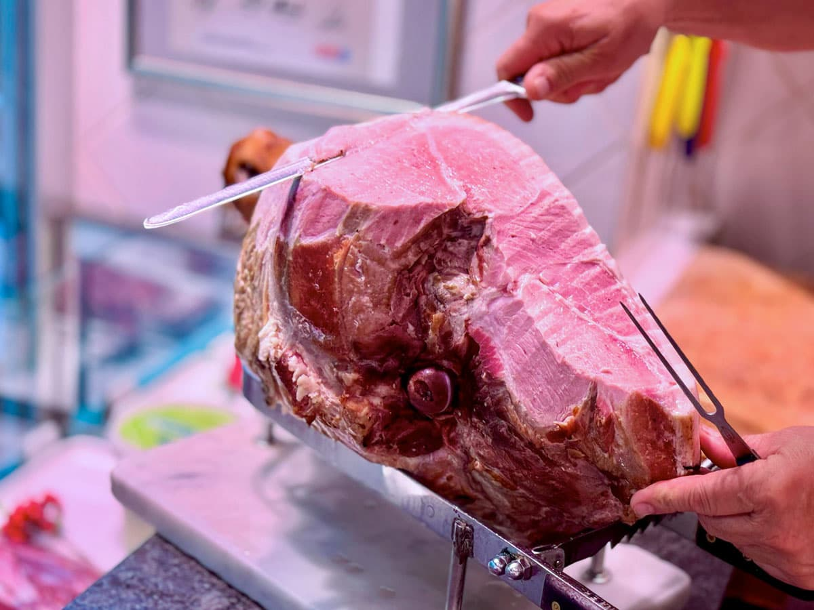
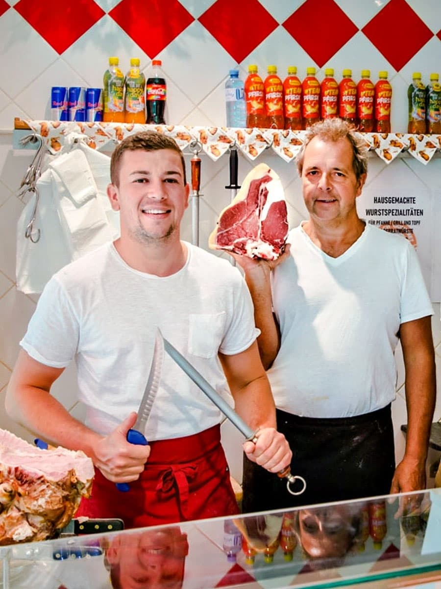
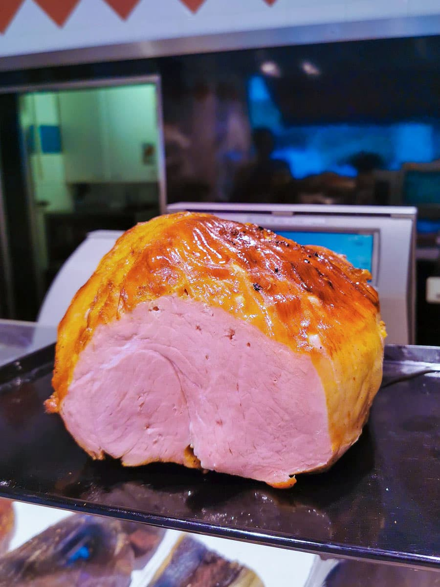
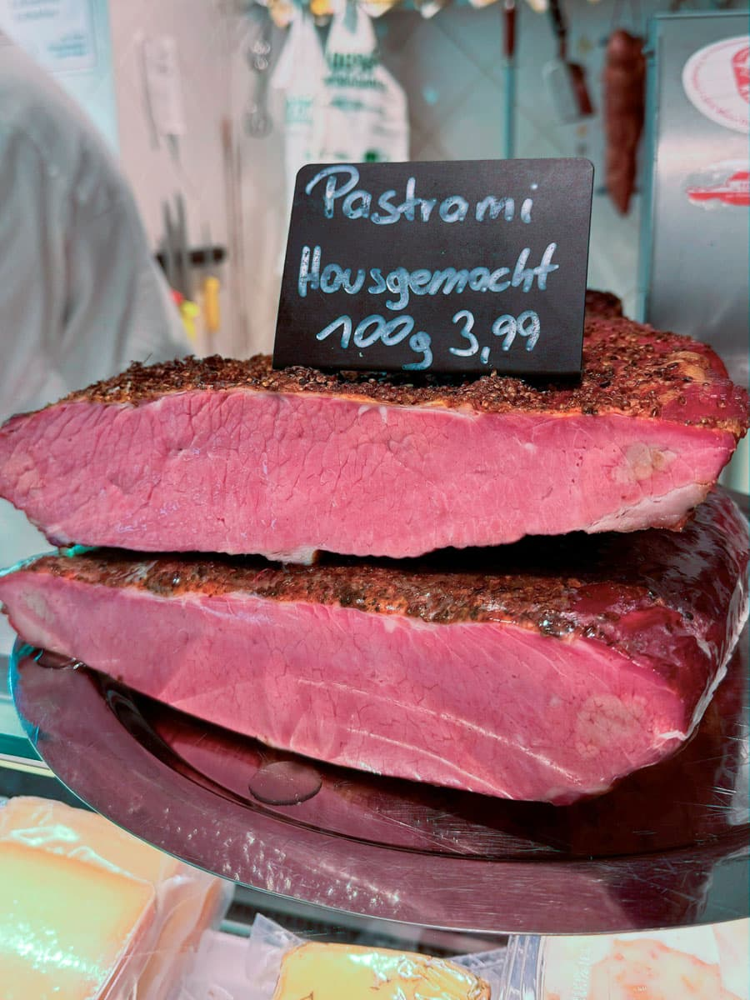
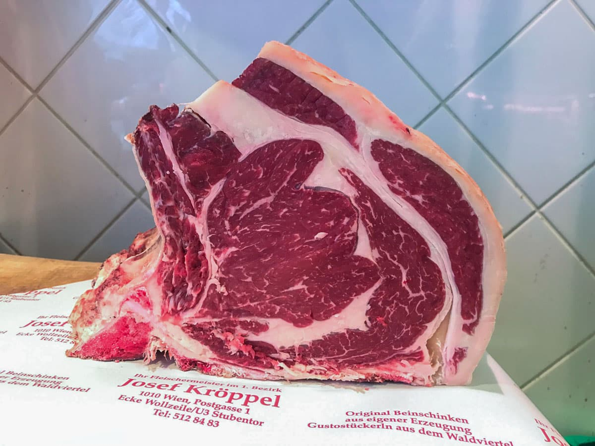
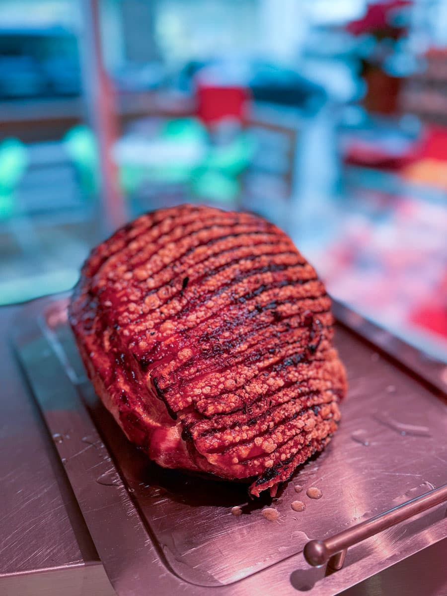
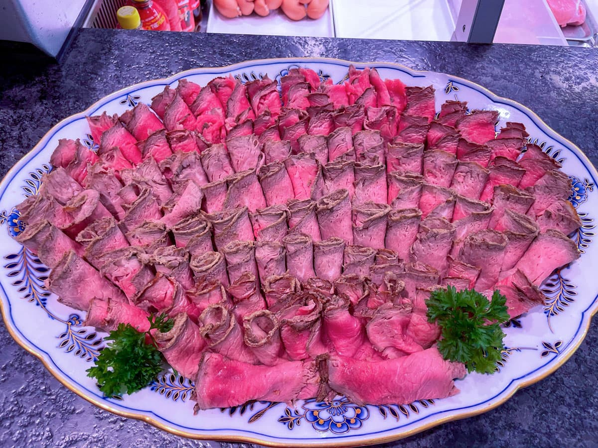
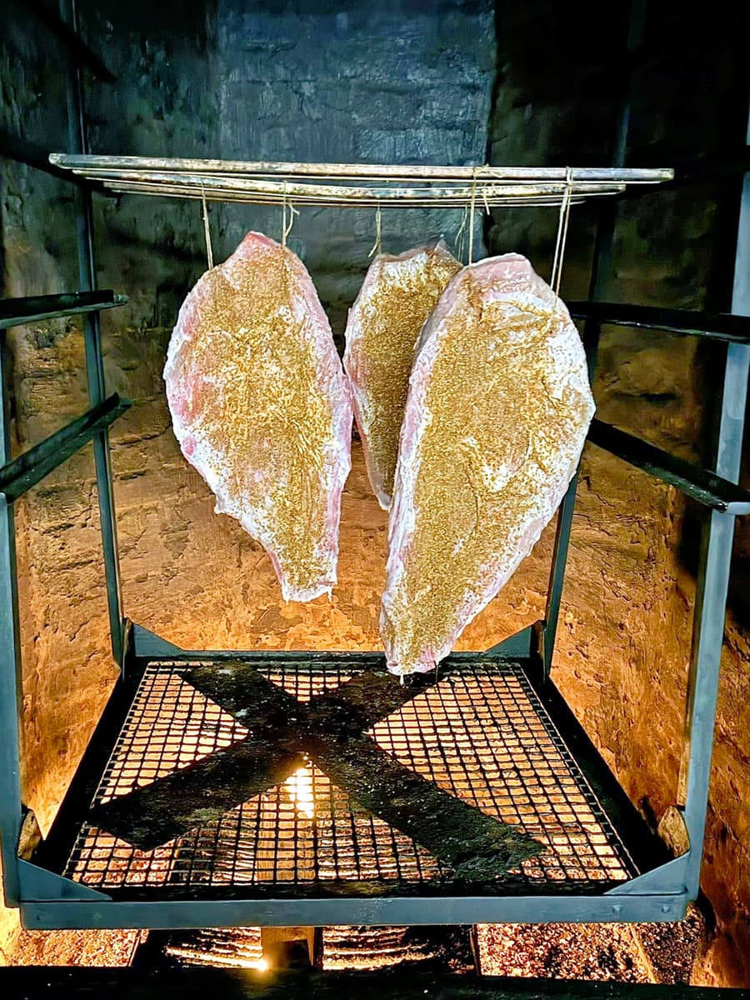
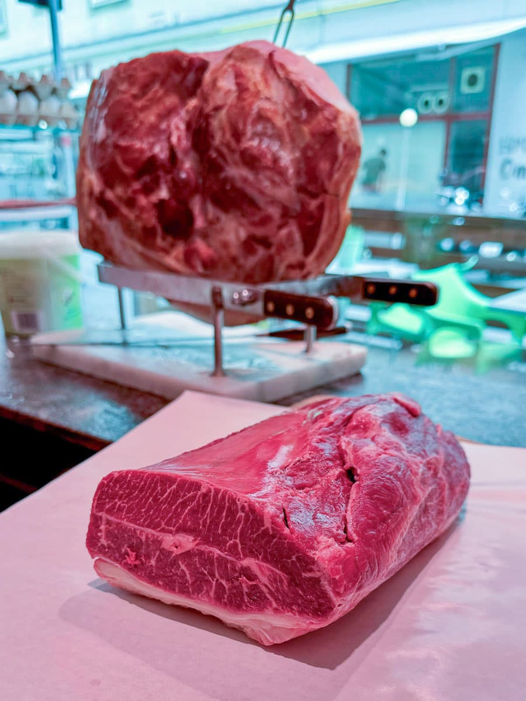

HausspezialitätBeinschinken
Aus dem Schlögel des Strohschweins – in unserer Mauerselch sorgsam geräuchert und mit Wasserdampf langsam gegart. Saftig, mild, mit leichtem Rauchgeschmack. Bei uns ausschließlich per Hand geschnitten.
Seit 1932 stehen wir mitten im 1. Bezirk Wiens für feinste Fleisch- und Wurstspezialitäten – handgemacht, regional, mit Herz und Handwerk.

Die Fleischerei Kröppel ist ein traditionsreicher Meisterbetrieb im 1. Bezirk Wiens. Seit der Gründung im Jahr 1932 ist der Betrieb für seine hochwertigen Fleisch- und Wurstspezialitäten weit über die Grenzen der Stadt hinaus bekannt.
Das Geschäft befindet sich in der Postgasse 1-3, 1010 Wien – Ecke Wollzeile, U3 Stubentor. Die hauseigene Produktion findet im Familienbetrieb im 9. Bezirk statt.
Mit Stolz führt Sohn Florian Kröppel die Fleischerei heute in der vierten Generation. Er setzt die Familientradition fort und sorgt dafür, dass Kunden weiterhin die hervorragende Qualität und den unverwechselbaren Geschmack erleben, für den die Fleischerei Kröppel seit fast einem Jahrhundert steht.
Über vier Generationen hinweg haben wir uns einen Namen gemacht – insbesondere durch unsere Expertise in der Herstellung hausgemachter Spezialitäten.

Über vier Generationen verfeinerte Rezepte – jedes Stück ein Stück Wiener Handwerk. Vom legendären Beinschinken bis zur eigenen Pastrami.

Aus dem Schlögel des Strohschweins – in unserer Mauerselch sorgsam geräuchert und mit Wasserdampf langsam gegart. Saftig, mild, mit leichtem Rauchgeschmack. Bei uns ausschließlich per Hand geschnitten.

Das Fricandeau aus dem Schlögel – gepökelt, 1-2 Tage in Salzlake, gewürzt mit Knoblauch und Kümmel und im Backrohr verzehrfertig gebraten. Knusprig und zart, im Handsemmerl ein Genuss.

Ursprünglich aus den USA – von uns verfeinert. Die gepökelte Rinderbrust wird im Heißrauch geräuchert und gebraten. Die Gewürzkruste an der Oberseite verleiht den unverwechselbaren Charakter.

Aus dem Rinderrücken vom Hügelland in Gschoadt, Bucklige Welt. Fleischstücke mit guter Fettabdeckung reifen mindestens zwei Wochen in unserer Kühlzelle. Perfekt zum Anbraten oder Grillen.

Goldbraun, mit knuspriger Schwarte und butterzartem Fleisch. Ein echter Wiener Klassiker, der zu Hause sofort einen Festtag macht – oder ins Semmerl wandert.

Edel angerichtete Platten – ob für Empfänge, Familienfeste oder die Grillsaison. Wir machen Ihnen jederzeit ein maßgeschneidertes Angebot.

In unserer hauseigenen Mauerselch wird über offenem Feuer mit Buchenholz langsam geräuchert. Die Wärme zieht durch das Mauerwerk, der Rauch umhüllt jeden Schinken – stundenlang. Es ist diese Geduld, die unseren Beinschinken auszeichnet.
Was in zwanzig Minuten gehen würde, lassen wir Stunden dauern. Denn echter Geschmack lässt sich nicht beschleunigen.
Unser Fleisch beziehen wir ausschließlich von kleinen, regionalen Betrieben aus Österreich. Wir kennen unsere Bauern persönlich, bezahlen faire Preise – und die Wege sind kurz.
Das Rindfleisch kommt aus dem steirischen Hügelland, das Schweinefleisch aus dem Weinviertel. So wissen wir genau, was bei uns über die Theke geht.

Einblicke in unsere tägliche Arbeit – das Handwerk, die Spezialitäten, das Geschäft.


Florian Kröppel, der die Fleischerei in vierter Generation führt, im Interview über das tägliche Handwerk, die Leidenschaft für echtes Fleisch und was es bedeutet, die letzte Fleischerei in Wiens Innenstadt zu sein.
Vom Beinschinken aus der Mauerselch bis zum wöchentlichen Mittagsmenü – hier spricht das Fleisch für sich.